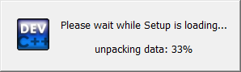
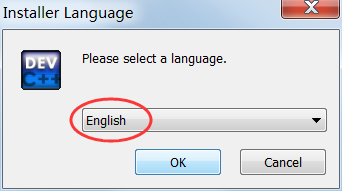
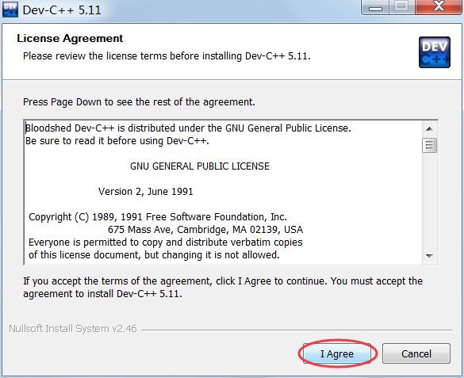
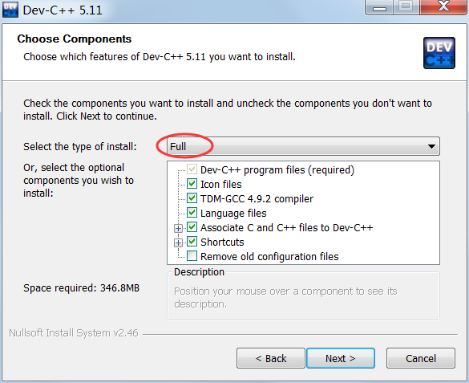
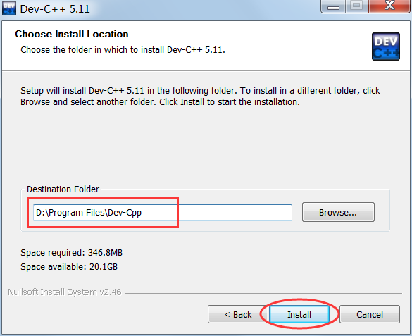
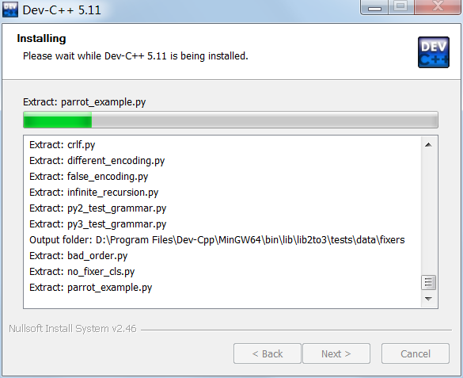
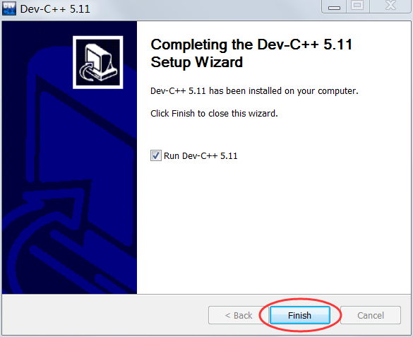
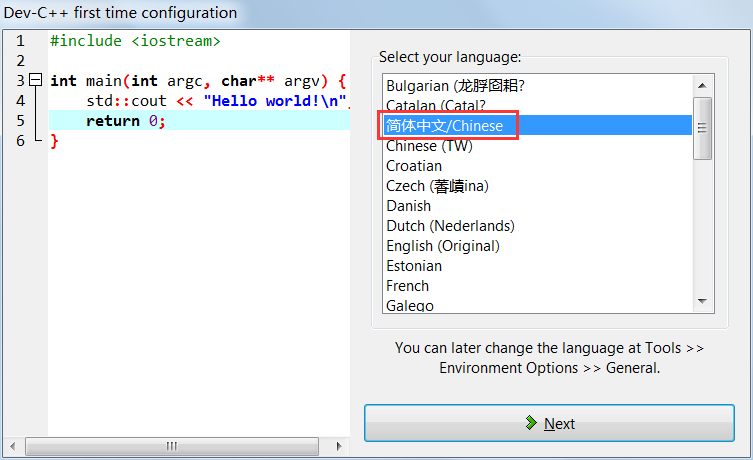
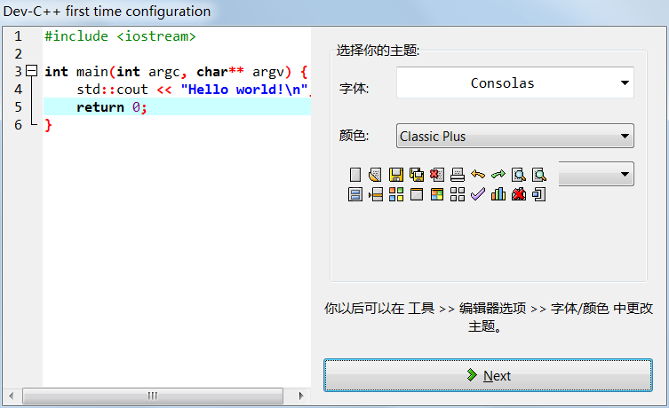
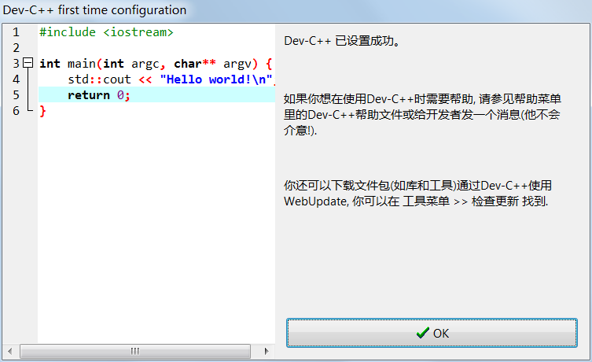

Dev C++下载地址和安装教程（图解）
Dev C++ 是一款免费开源的 C/C++ IDE，内嵌 GCC 编译器（GCC 编译器的 Windows 移植版），是 NOI、NOIP 等比赛的指定工具。Dev C++ 的优点是体积小（只有几十兆）、安装卸载方便、学习成本低，缺点是调试功能弱。
安装 Dev C++ 跟安装普通软件一样，远没有安装 VS 那么复杂。
截止到2017年06月07日，Dev C++ 的最新版本是 5.11。
这里我们使用 Dev C++ 5.11 的简体中文版，并提供了官方网站和百度网盘两种下载通道，请关注公众号「站长严长生」，回复“1234”即可获取最新下载地址。

1) 首先加载安装程序（只需要几十秒）
2) 开始安装
Dev C++ 支持多国语言，包括简体中文，但是要等到安装完成以后才能设置，在安装过程中不能使用简体中文，所以这里我们选择英文（English）。
3) 同意 Dev C++ 的各项条款
4) 选择要安装的组件
5) 选择安装路径
6) 等待安装
7) 安装完成
1) 第一次启动 Dev C++ 后，提示选择语言。
2) 选择字体和主题风格
3) 提示设置成功
安装 Dev C++ 跟安装普通软件一样，远没有安装 VS 那么复杂。
截止到2017年06月07日，Dev C++ 的最新版本是 5.11。
这里我们使用 Dev C++ 5.11 的简体中文版，并提供了官方网站和百度网盘两种下载通道，请关注公众号「站长严长生」，回复“1234”即可获取最新下载地址。
开始安装 Dev C++
Dev C++ 下载完成后会得到一个安装包（.exe 程序），双击该文件即可开始安装。1) 首先加载安装程序（只需要几十秒）

2) 开始安装

Dev C++ 支持多国语言，包括简体中文，但是要等到安装完成以后才能设置，在安装过程中不能使用简体中文，所以这里我们选择英文（English）。
3) 同意 Dev C++ 的各项条款

4) 选择要安装的组件

选择“Full”，全部安装。5) 选择安装路径

你可以将 Dev C++ 安装在任意位置，但是路径中最好不要包含中文。6) 等待安装

7) 安装完成

开始配置 Dev C++
首次使用 Dev C++ 还需要简单的配置，包括设置语言、字体、和主题风格。1) 第一次启动 Dev C++ 后，提示选择语言。

这里我们选择简体中文，英语给力的朋友也可以选择英文。2) 选择字体和主题风格

这里保持默认即可。3) 提示设置成功

点击“OK”按钮，进入 Dev C++，就可以编写代码了。关注公众号「站长严长生」，在手机上阅读所有教程，随时随地都能学习。内含一款搜索神器，免费下载全网书籍和视频。

微信扫码关注公众号